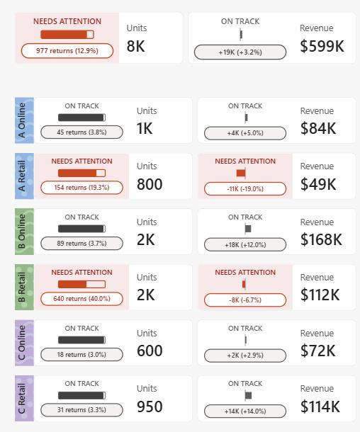
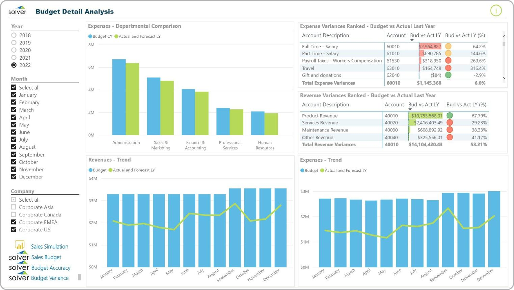

A centralized resource for budget planning, forecasting, contract pricing, and district maintenance support.
View Budget Dashboard
Track planned budgets, monitor contract expenditures, forecast funding requirements, and support district-level decision making through centralized reporting tools.

Access maintenance budget data, contract utilization, expenditure tracking, and district performance metrics through centralized reporting tools.
